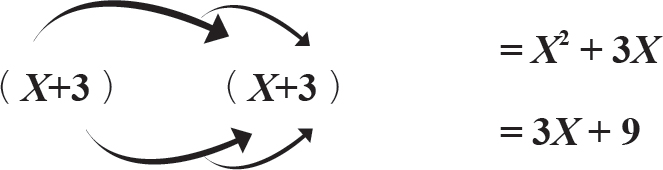
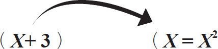
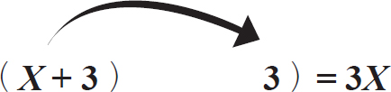
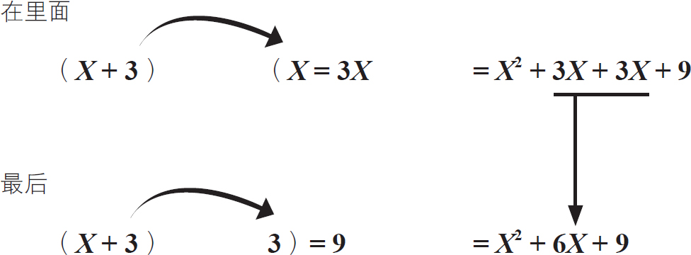

在计算数学方程式时，我们常常会用到一种技巧，称为代数扩展与化简。这就像做加法和减法一样，把那些具有相同值的项分散或者合并起来计算，会使过程更加简单。
例1：对方程式（X ＋3）2 进行扩展。
第一步扩展
（X ＋3）2 ＝（X ＋3）（X ＋3）
（X＋3）×（X＋3）
变量和数的平方和。
进一步扩展，用左括号中的项分别乘以右括号中的项

让我们一步一步地相乘：
第一步

在外面


原项（x ＋3）2 扩展为（X 2 ＋6X ＋9）。
所以，（X ＋3）2
扩展：
（X ＋3）×（X ＋3）
再扩展到
X 2 ＋6X ＋9
例2：
在某些情况下，为了方便计算，您可能需要将一个较长的项简化为一个较短的项。例如，将（2xh ＋h 2 ）简化成h （2x ＋h ）。
还原一下，（2x ）×h ＝2hx ，然后h ×h ＝h 2 ，所以它们的和等于2hx ＋h 2 。
这里是在介绍如何简化一个有两个变量和一个常数的项。
简化就像减少一部分。
简化后的项具有相同的值，但它更易于运算。